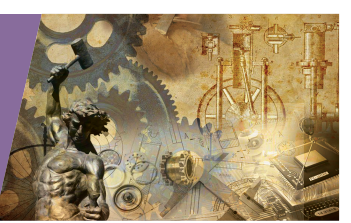
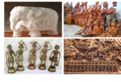
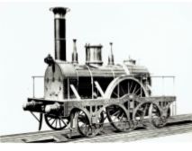
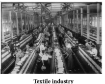
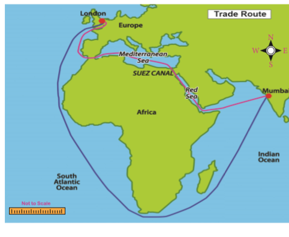
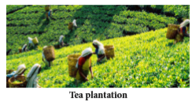
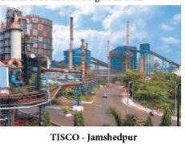
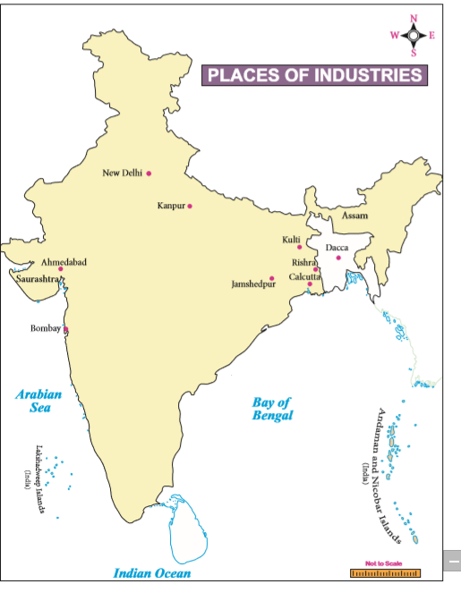

The history of Indian industry perhaps dates back to the history of humankind. India’s traditional economy was characterised by a blend of agriculture and handicrafts. According to Edward Baines, ‘The birthplace of cotton manufacture is India where it probably flourished long before the dawn of authentic history.’ Bernier, who visited India during the reign of Mughal emperor Shah Jahan, marvelled at the incredible quantity of manufactured goods. Tavernier, a French traveller, admired the peacock throne, carpets of silk and gold as well as mini carvings.
The crafts in India has a rich history. Crafts were an integral part in the life of the people. Before arrival of mechanised industry, the production of Indian handicrafts was the second largest source of employment in rural India next to agriculture. The traditional Indian industry was known in the fields of textiles, woodwork, ivory, stone cutting, leather, fragrance wood, metal work and jewellery. The village artisans such as potters, weavers, smiths produced articles and utensils for domestic use. But some specialised goods were produced for domestic and international markets. Some such specialised goods produced were cotton textiles, muslin, wool, silk and metal articles. India was famous for its fine quality of cotton and silk clothes. There are references made in many scholarly works to the professions of the weaver, the tailor and the dyer. Certain centres of metal industry were quite well known. For example, Saurashtra was known for bell metal, Vanga (Bengal) for tin industry and Dacca was identified with muslin clothes.
Box item
The muslin of Dacca
Mummies in Egyptian tombs dating from 2000 BC(BCE) were found wrapped in Indian muslins of the finest quality. A 50metres of this thin fabric could be squeezed into a match box.

The British conquest transformed Indian economy (self-reliant) into colonial economy.
As the British conquered the Indian territories one after another, the native rulers, the nobles and the landlords lost their power and prosperity. The demand for the fine articles to be displayed in durbars and other ceremonial occasions disappeared. As a result, the craftsman who were patronised by these rulers lost their importance and became poor. For generations, these craftsmen had been practicing their craft, and they did not possess any other skills. So they had to work as labourers in fields to meet their daily needs. This change resulted in increased pressure on agriculture and there was large-scale under-employment in agriculture. The substitution of commercial food crops in agriculture ruined the Indian agro-based industry. The splendid period of indigenous handicraft industries came to an end as the political influence of the East India Company spread over various parts of the country.
Indian handicrafts that had made the country famous, collapsed under the colonial rule. This was mainly due to the competition posed by the machine-made goods that were imported from Britain by the British rulers. The ruling British turned India as the producer of raw materials for their industries and markets for their finished products. Moreover, the railways and roadways introduced by the British facilitated the movement of finished products to reach the remotest parts of India and the procurement of raw materials from these parts.

Textile was the oldest industry in India. The highly specialised skills of Indian weavers and the low production cost gave a tough competition to the European manufactures. It led to the invention of cottongin, flying shuttle, spinning jenny and steam engine in England, which made the production of textiles on large scale. India became the market for the finished products of Britain. As a result, peasants who had supplemented their income by part-time spinning and weaving had to now rely only on cultivation. So they lost their livelihood. Moreover, the Indian goods made with primitive techniques could not compete with industrial goods made in England.

Box item
The Drain Theory of Dadabai Naoroji
Dadabai Naoroji was the first to acknowledge that the poverty of the Indian people was due to the British exploitation of India’s resources and the drain of India’s wealth to Britain.

All the policies implemented by the British government in India had a deep impact on India’s indigenous industries. Free trade policy followed by the East India Company compelled the Indian traders to sell their goods below the market prices. This forced many craftsmen to abandon their ancestral handicraft talents. East India Company’s aim was to buy the maximum quantity of Indian manufactured goods at the cheapest price and sell them to other European countries for a huge profit. This affected the traditional Indian industry. The British followed the policy of protective tariffs that was much against the trading interests of India. Heavy duties were charged on Indian goods in Britain, but at the same time, the English goods entering India were charged only nominal duties.
During the first half of 19th century western countries were experiencing industrialisation, India suff ered a period of industrial decline.
The process of disruption of traditional Indian crafts and decline in national income has been referred to as de-industrialisation.
The Indian domestic industry could not have withstood foreign competition, which was backed by a powerful industrial organisation, big machinery, large-scale production. Th e difficulties in Indian industries was complicated further by the construction of Suez Canal, because of which transport cost was reduced, which made the British goods cheaper in India. The main cause for the decline of handicraft industry was the greater employment opportunities and income-generating effect of the modern factory.
The process of industrialisation started in India from the mid-19th century. The beginning of modern industry is associated with the development in mainly plantations like jute, cotton and also steel. There was a limited development of mining, especially coal. The accelerated industrialisation began with the development of railways and roadways. This growth greatly influenced the economic and social life of people in the country. The two World Wars gave an impetus to the development of number of industries such as chemical, iron and steel, sugar, cement, glass and other consumer goods. Most mills were setup by wealthy Indian businessmen. Initially this development was confined to the setting up of cotton and jute textile mills.
The plantation industry was the first to attract the Europeans. The plantation industry could provide jobs on a large scale, and in reality, it could meet the increasing demands for tea, coffee and indigo by the British society. Therefore, plantation industry was started early on. The Assam Tea Company was founded in 1839. Coffee plantation also started simultaneously. As the tea plantation was the most important industry of Eastern India, coffee plantation became the centre of activities in South India. The third important plantation, which gave birth to factory, was jute. All these industries were controlled by the many former employees of the British East India Company.
In India, modern industrial sector in an organized form started with the establishment of cotton textile industry in Bombay in 1854. In 1855, jute industry was started in the Hooghly valley at Rishra near Calcutta. The first paper mill was started in Ballygunj near Calcutta in 1870. The cotton mills were dominated by Indian enterprises and the jute mills were owned by the British capitalists. Cotton mills were opened in Bombay and Ahmedabad, and jute mills proliferated on the Hooghly river banks. The woollen and leather factories became prominent in Kanpur.

The heavy industries included the iron and steel industry, Steel was first manufactured by modern methods at Kulti in 1874.Iron and steel industries began rooted in the Indian soil in the beginning of 20th century. However, the credit for the development of large-scale manufacture of steel in India goes to Jamshedji Tata. The Tata Iron and Steel Company (TISCO) was setup in nineteen not seven at Jamshedpur. It started producing pig iron in nineteen eleven and steel ingots in nineteen twelve.

The length of railways increased from 2,573 km in 1861 to 55,773 kilometer in 1914. Opening of the Suez Canal also shortened the distance between Europe and India by about 4,830 kilometer. This reduced distance facilitated further industrialisation of India. As a result of Swadeshi Movement, the cotton mills increased from 194 to 273 and jute mills from 36 to 64. The British had consolidated the power in India and thereby attracted large number of foreign entrepreneurs and capital particularly from England. Foreign capitalists were attracted to Indian industry as it held the prospect of high profi t. Labour was extremely cheap. Raw materials were cheaply available. India and its neighbours provided a ready market.
The Confederation of Indian Industry is a business association in India. CII is a nongovernment, not-for-profi t, industry-led and industry-managed organisation. It was founded in 1985. It has over 9,000 members form the private as well as public sectors, including small and medium enterprises (S, M, E) and multinational corporations (M, N, Cs).
To realise the dream of development of industries, Indian Government adopted certain industrial policies and Five-Year Plans. One of the most important innovations in the industrial fi eld aft er Independence has been the introduction of the Five-Year Plans and the direct participation in industry by the government as expressed in the Industrial Policy Resolution of 1948. This Resolution delineated the role of the state in the industrial development both as an entrepreneur and as an authority. As per the Industrial Policy Resolution 1956, industries were classifi ed into three categories:
Schedule A: Only the Government can handle these industries. Some of these are atomic energy, electrical, iron and steel and others.
Schedule B: These comprise road and sea transportation, machine tools, aluminium, chemicals including plastics and fertilisers, ferroalloys and certain types of mining.
Schedule C: Under this category, the remaining industries and left to the private sector.
Box item
Classification of Industries
During this phase, a majority of consumer goods were produced in India. The industrial sector was underdeveloped with weak infrastructure. Technical skills were in short supply. The first three Five-Year Plans were very important because their aim was to build a strong industrial base in independent India. These plans mostly focused on the development of capital goods sector. As a result, this phase witnessed a strong acceleration in the growth rate of production.
As the first three Five-Year Plans mostly focused on the development of the capital goods sector, the consumer goods sector was neglected. The consumer goods sector is the backbone of rural economy. As the result, there was a fall in the growth rate of industrial production. So this period is marked as the period of structural retrogression.
The period of the 1980s can be considered as the period of the industrial recovery. This period witnessed quite a healthy industrial growth.
The year nineteen ninety one ushered a new era of the economic liberalisation. India took major decision to improve the performance of the industrial sector. The Tenth and Eleventh Five-Year Plans witnessed a high growth rate of industrial production. The abolition of industrial licensing, dismantling of price controls, dilution of reservation of small-scale industries and virtual abolition of monopoly law enabled Indian industry to flourish. The new policy welcomes foreign investments.

India has now a large variety of industries producing goods of varied nature, which shows a high degree of modernisation. Some modern industries have really grown and they are competing effectively with the outside world. This has reduced our dependence greatly on foreign experts and technologists. On the contrary, India is exporting trained personnel to relatively less developed countries.
The term information technology includes computer and communication technology along with software. Along with three-sector model of primary, secondary and tertiary industries, a fourth sector, information-related industries, has emerged. The knowledge economy depicts the automation of labour-intensive manufacturing and service activities as well as growth in new service industries such as health care, distance education, software production and multimedia entertainment.
Another positive aspect of industrial growth is the attainment of the goal of self-reliance. We have achieved self-reliance in machinery, plant and other equipment. Today, the bulk of the equipment required for industrial and infrastructural development is produced within the country.
The Indian road network has become one of the largest in the world. Government efforts led to the expansion of the network of National Highways, State highways and major district roads, which in turn has directly contributed to industrial growth.
As India needs power to drive its growth engine, it has triggered a noteworthy improvement of availability of energy. After almost seven decades of independence, India has emerged as the third largest producer of electricity in Asia.
Industrialisation is an important component of economic growth. India’s industrial expansion over the plan period presents a mixed picture. Compared to the preindependence level, industrial growth during the Five-Year plan periods is phenomenal.
incredible |
unbelievable |
நம்பமுடியாத |
indigenous |
Native |
உள்நாட்டு |
acceleration |
increasing the speed |
விரைவுப்படுத்துதல் |
swadeshi |
produced with in this country |
உள்நாட்டு உற்பத்திப்பொருள் |
entrepreneur |
businessman |
தொழில் முனைவோர் |
retrogression |
to return to older |
பின்னோக்கிச் செல்லுதல் |
1) |
Tavernier |
- |
Drain Theory |
2) |
Dacca |
- |
Paper mill |
3) |
Dadabai Naoroji |
- |
Artisan |
4) |
Ballygunj |
- |
Muslin |
5) |
Smiths |
- |
French traveller |
Reason (R): British made India as the producer of raw materials and markets for their finished products.